STEP 01 / 12
把模糊的想法，变成可确认的范围
想做一个家庭影像管理工具，先从哪里开始？Agent 把调研拆成确认卡，用户补充“只需要基础能力，通过浏览器使用”，让方案围绕实际需要展开。
- 你来决定
- 认可、补充或修改调研发现，明确第一版的边界。
- 这一步留下
- 可继续确认的调研记录，供后续 PRD 使用。
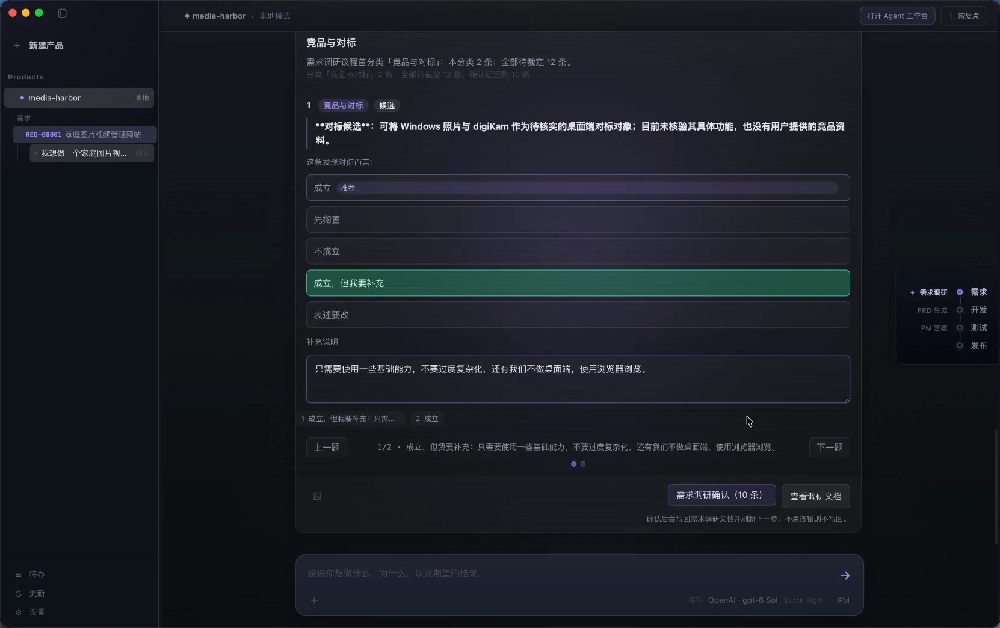
放大截图NORTHSTAR IN PRACTICE / 图文演示
跟着家庭影像管理项目 media-harbor，看看人和 Agent 如何一起澄清需求、完成设计、编写代码，再处理评审问题。12 张真实截图，把这段研发历程讲清楚。
一个在浏览器中管理家庭照片和视频的工具：读取本地素材、按日期浏览、挑选照片放入待打印集合。
Agent 协助调研、设计、实现与检查；人确认范围、反馈体验、核对结果并签核。系统记录版本、状态与交接依据。
01 / PM · 产品需求
从想法到可评审的需求文档，再由人确认交给开发的版本。
STEP 01 / 12
想做一个家庭影像管理工具，先从哪里开始？Agent 把调研拆成确认卡，用户补充“只需要基础能力，通过浏览器使用”，让方案围绕实际需要展开。

放大截图STEP 02 / 12
确认过的调研进入产品需求文档（PRD）。背景目标、用户场景、功能范围与验收标准有了共同的落点，可以一起检查遗漏和矛盾。
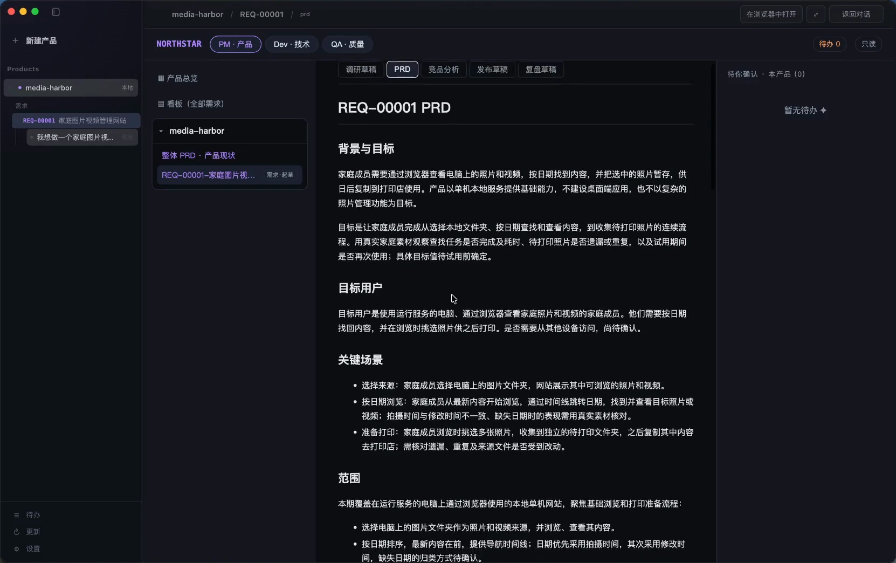
放大截图STEP 03 / 12
评审问题处理完，PM 确认签核。系统记录已签核的需求版本，后续开发有明确的需求依据，也能追查变更来自哪里。
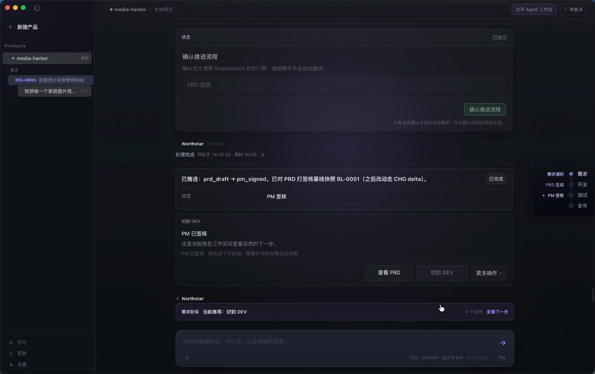
放大截图02 / DEV · 技术设计
技术调研、设计评审与产品决策相互衔接，确认方案后再开始实现。
STEP 04 / 12
Dev 接续已签核的需求，开展技术调研。素材的日期从哪里读取、元数据缺失时如何处理，都需要先明确，再作为技术设计文档（TD）的输入。
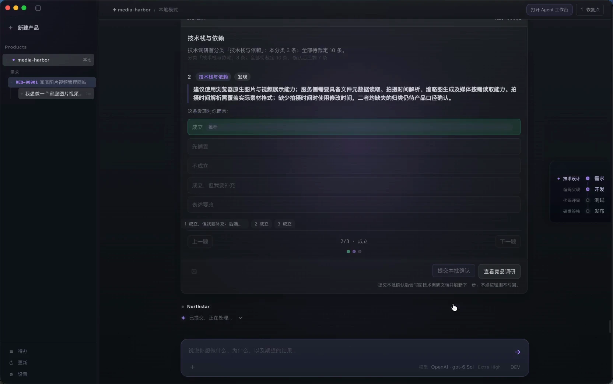
放大截图STEP 05 / 12
TD 编写与评审后，重复收集、日期与时区等业务规则仍需明确产品意图。流程回到 PM 收口异议，修订需求后再同步技术设计。
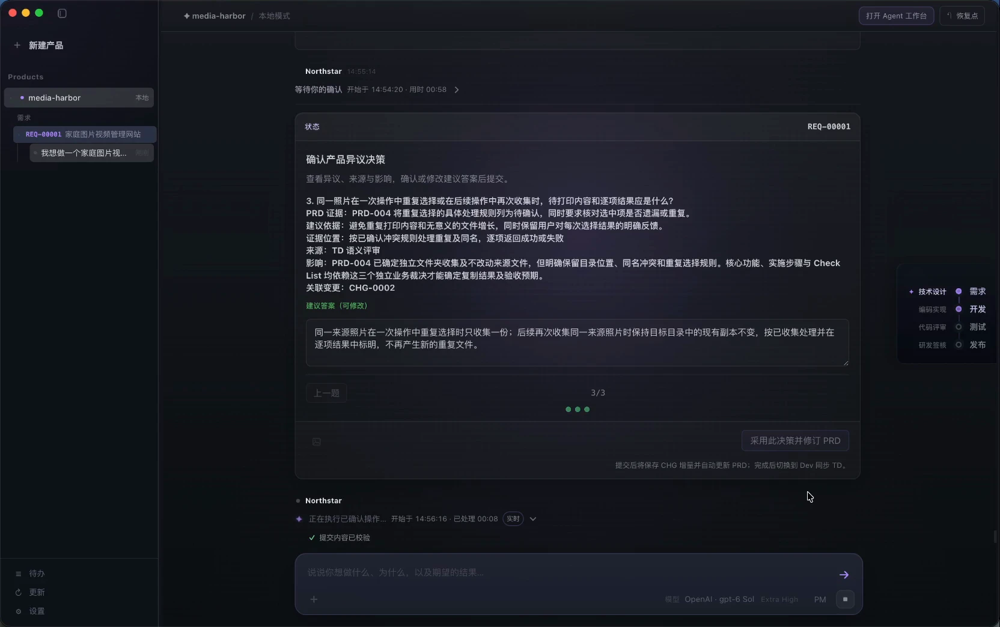
放大截图STEP 06 / 12
设计问题收敛后，Agent 将实现顺序与验证方式整理为确认卡。用户可以逐项检查和调整，让接下来的编码有明确步骤。
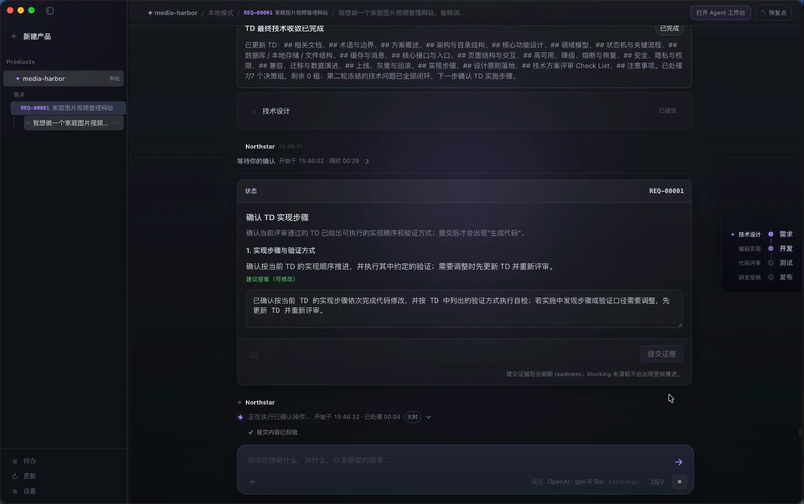
放大截图03 / DEV · 编码与体验
在同一工作台看实现进展、反馈实际体验，再交给独立验收检查。
STEP 07 / 12
确认生成代码后，Agent 读取项目知识、PRD 和 TD，在工作台持续展示实现步骤、文件修改与命令执行记录。你能看到工作正在如何推进。
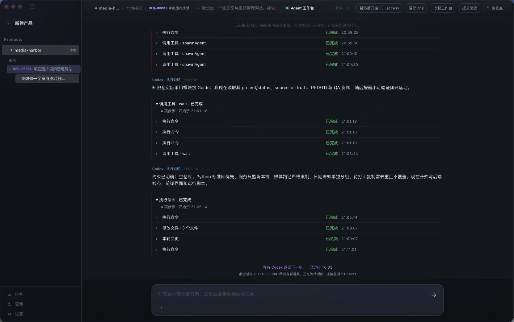
放大截图STEP 08 / 12
本地服务运行后，用户实际操作页面，把目录选择与待打印功能的问题连同截图发给 Agent，继续在原来的上下文中修复。
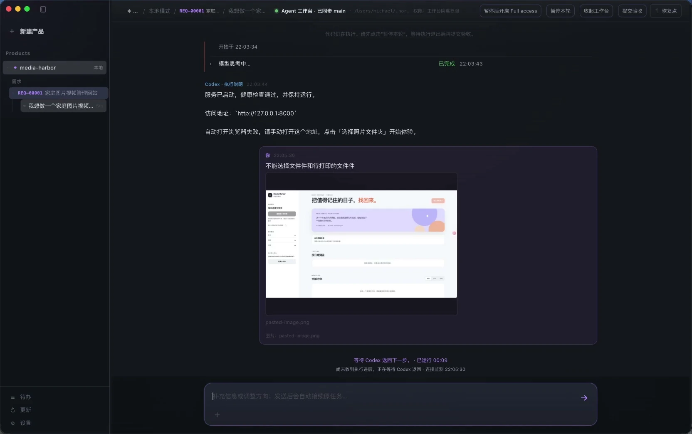
放大截图STEP 09 / 12
独立验收曾被体验服务占用端口阻塞。Agent 定位原因、停止占用服务并重新检查；Northstar 验收通过后，流程再衔接代码评审。
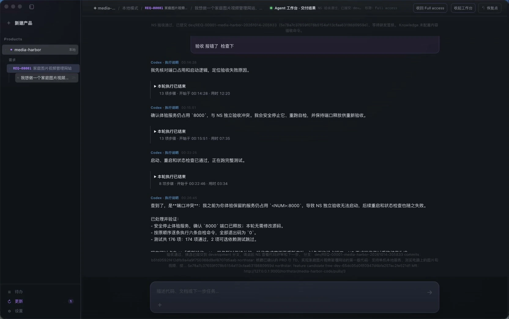
放大截图04 / DEV → QA · 评审与交接
两轮评审与修复之后，核对代码版本和修复结果，再由人完成签核。
STEP 10 / 12
代码评审列出问题、证据位置与建议处理方式。首轮十三项问题修复并验收后，自动再评审发现五项问题，继续进入第二轮修复。
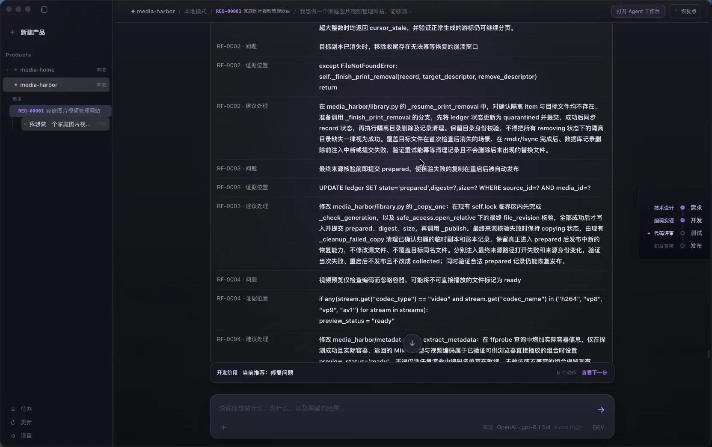
放大截图STEP 11 / 12
第二轮修复通过 Northstar 验收，确认卡列出待确认代码版本和五项必修问题。由人核对结果并确认推进，随后完成 Dev 研发签核。
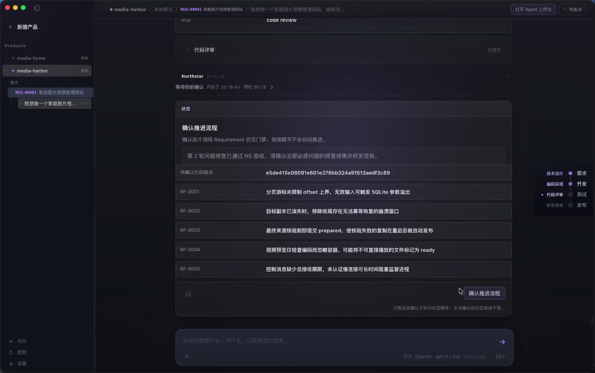
放大截图STEP 12 / 12
Dev 签核完成并确认切换后，系统进入 QA 测试计划阶段，显示“同步测试计划”入口。需求、设计和研发结果成为接下来质量验证的输入。
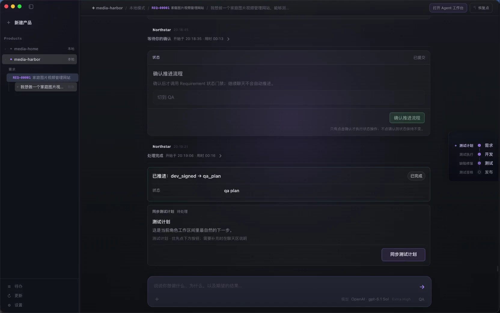
放大截图WHAT STAYS / 每一步都有积累
调研发现、产品决定、PRD 与技术设计，承接同一个需求，后续实现有据可依。
体验反馈、评审意见、代码修改和验收结果相互连接，失败后仍能继续定位与处理。
需求签核、修复确认与角色交接都有明确入口，人掌握目标和结果的决定权。
本次实录推进到 QA 测试计划入口，尚未展示 QA 测试执行、质量签核或发布。当前主要由一个人在不同角色间切换；Dev 签核及后续 QA 流程仍在持续验证与完善。